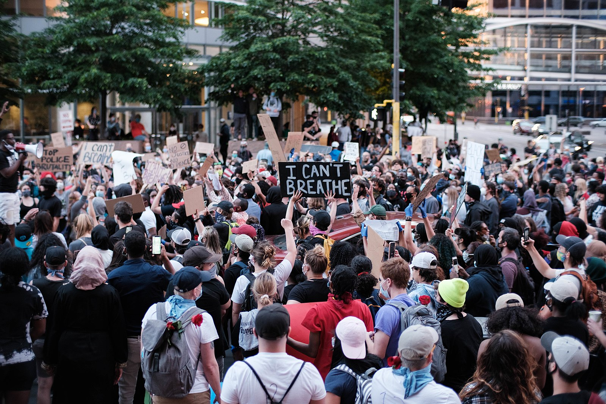

FIVE LARGEST PROTESTS IN U.S. HISTORY

Protestors in Minneapolis on May 28, 2020, three days after the killing of George Floyd.
The tradition of protests that demand progressive change in the United Sates continue.
Here are the country's five of the top protests in terms of attendance:
- George Floyd protests nationwide in 2020 with an estimated 26 million protestors.
- Women's March in 2017 drew about 5.6 million people nationwide.
- March for Our Lives, a student led protest in 2018 about gun violence, drew about 2 million people.
- Women's March in 2018 drew about 1.5 million protestors.
- March on Washington for Lesbian, Gay, and Bi Equal Rights and Liberation drew about 1 million people in 1993.